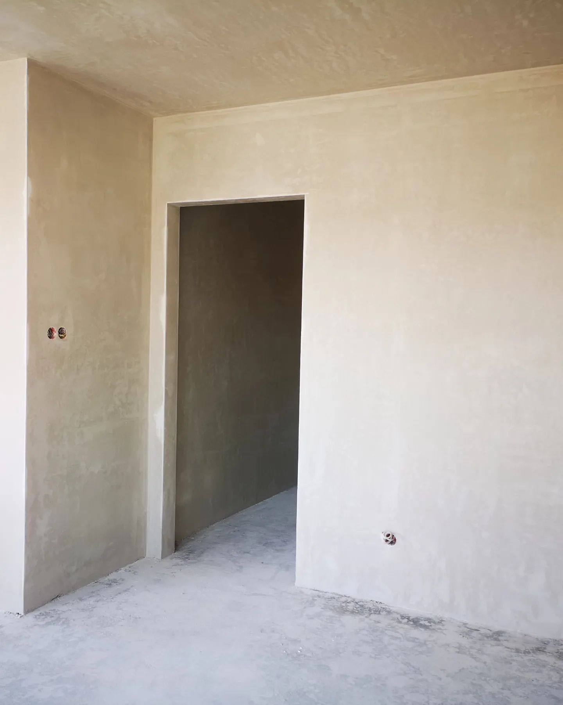
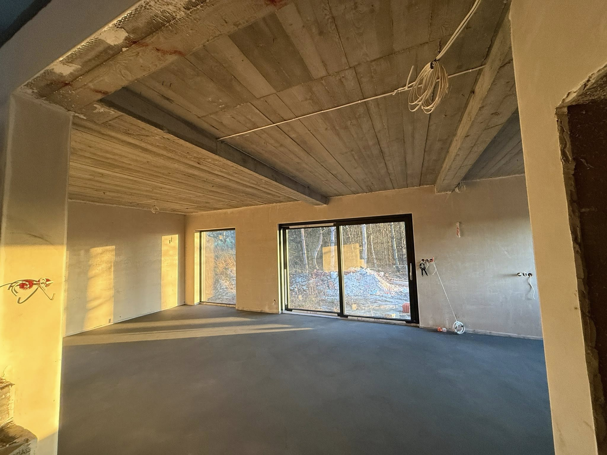
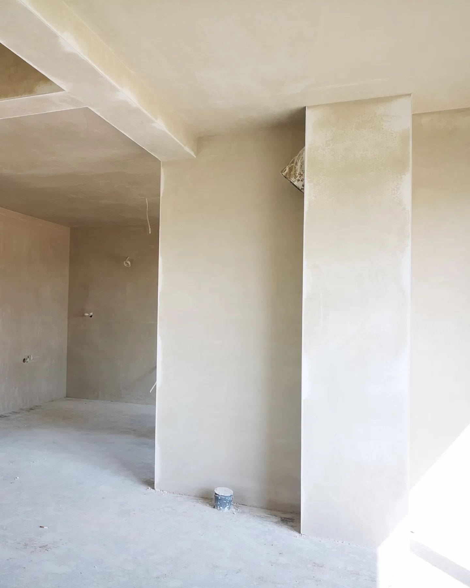
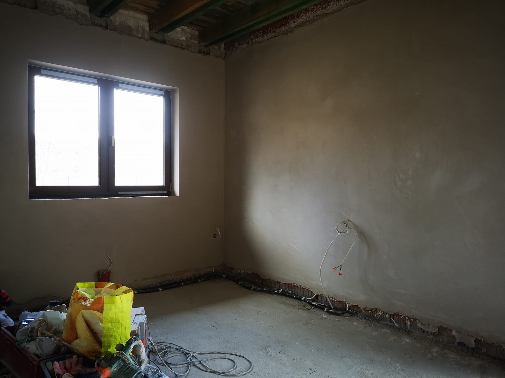

Wykonujemy tynki: gipsowo-wapienne, gipsowe twarde, gipsowe lekkie oraz cementowo-wapienne. Technologia maszynowa gwarantuje równą, gładką powierzchnię.
Tynkowanie agregatem to metoda nakładania masy tynkarskiej za pomocą specjalistycznej maszyny, która dozuje, miesza i natryskuje materiał pod ciśnieniem. Efekt to jednorodna, równomiernie gruba warstwa o doskonałej przyczepności — niedostępna przy nakładaniu ręcznym.

Tynk gipsowo-wapienny łączy zalety gipsu i wapna, co przekłada się na doskonałą przyczepność, elastyczność i podwyższoną odporność na wilgoć. To sprawdzone rozwiązanie do wykańczania wnętrz budynków mieszkalnych — szczególnie tam, gdzie liczy się trwałość i estetyka.

Tynk gipsowy twardy to wariant o podwyższonej twardości powierzchniowej, co czyni go idealnym wyborem do pomieszczeń o wymaganiach użytkowych — korytarzy, schodów czy ścian narażonych na mechaniczne uszkodzenia.

Tynk gipsowy lekki zawiera kruszywo perlit lub wermikulit, co obniża jego ciężar i poprawia właściwości termoizolacyjne. Sprawdza się świetnie na sufitach i ścianach, gdzie zależy nam na zmniejszeniu obciążenia konstrukcji przy zachowaniu pięknej, gładkiej powierzchni.

Tynk cementowo-wapienny to klasyczny wybór o wyjątkowej trwałości i odporności mechanicznej. Dzięki zawartości cementu stanowi doskonałą bazę w miejscach o podwyższonej wilgotności — piwnicach, garażach, kotłowniach — a jego plastyczność zapewniają dodatki wapna.
Zdjęcia z realizacji tynków maszynowych na prywatnych domach w regionie łowickim.